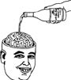

\1\2ğaç\3
Alkolün beyin hücreleri üzerindeki etkisi nedir?

İyi haber. Alkol beyin hücrelerini “öldürmez.” Sadece yeni hücrelerin daha yavaş büyümesine neden olur.
Alkolün beyin hücrelerini öldürdüğü fikri, en azından, 19. yüzyılın başlarında alkol karşıtı kampanyalar düzenleyen ve alkol kullanımının tamamen yasaklanmasını isteyen gruplara kadar uzanır. Bunun bilimsel bir dayanağı yoktur.
Alkoliklerden ve alkol kullanmayanlardan alınan örnekler, hem toplam nöron sayısı hem de nöronların yoğunluğu açısından belirgin bir fark göstermemiştir. Birçok diğer çalışma, makul miktarda içmenin aslında kavramaya yardımcı olabildiğini göstermiştir. İsveç’teki bir çalışma alkol verilmiş farelerde daha çok beyin hücresi oluştuğunu ortaya koymuştur.
Çok fazla alkol kullanımı beyinde ciddi zararlara neden olur, fakat bu zararların hücrelerin ölmesiyle bir ilgisi olduğuna dair hiçbir kanıt yoktur; bunun sebebi daha ziyade alkolün, beynin çalışan işlemlerini engellemesinden kaynaklanıyor olabilir.
Baş ağrısıysa beynin su kaybından dolayı büzülmesinden ve beyni saran zarın çekilmesinden kaynaklanmaktadır. Ağrıyan zardır. Beynin içine bıçak batırsanız bile bir şey hissetmez.
Filtrum, üst dudağımızın üstünde bulunan dikey oyuktur, kimse bu adın nereden geldiğini bilmez. Bu oyuk, birayı şişeden içerken içeriye havanın girmesini sağlar.
Sarhoşken söylenen şeyler önceden düşünülmüştür.
FLAMAN ATASÖZÜ
Eğer birayı yerçekiminin olmadığı bir yerde açacak olursanız biranın tamamı bir anda çıkıp küre şeklinde damlalar halinde çevrede yüzerdi.
Gökbilimciler son zamanlarda Samanyolu’ndaki bizim bölgemizde muazzam miktarda alkol olduğunu keşfettiler. Dev metanol bulutu bir uçtan bir uca 463 km’dir. Bizim içmeyi sevdiğimiz alkol tahıl alkolüdür (diğer adıyla etil alkol ya da etanol) ve metanol bizi zehirleyebilir. Ama söz konusu keşif, “evren onu içelim diye var” teorisini bir yanıyla destekler.